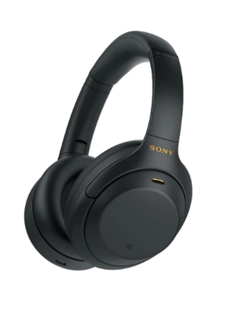
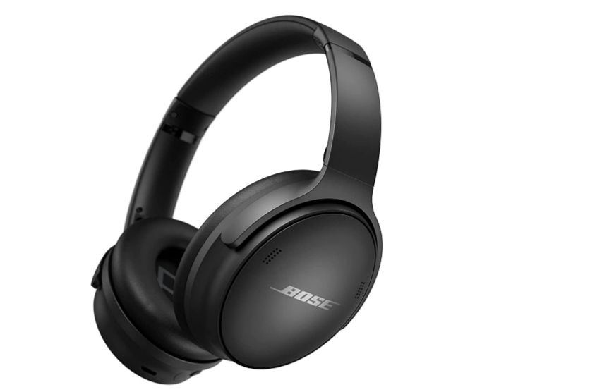
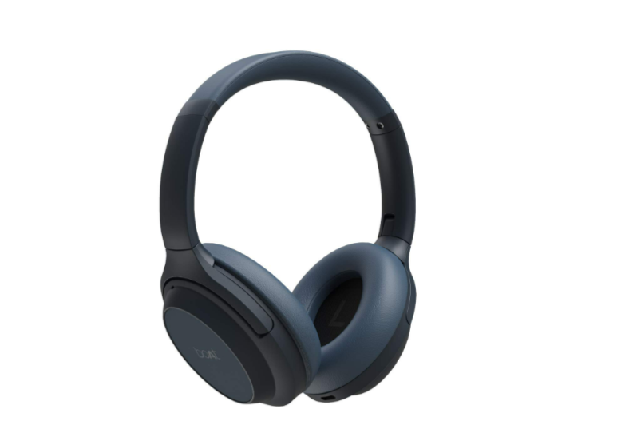
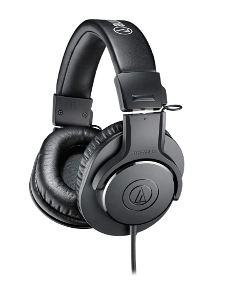
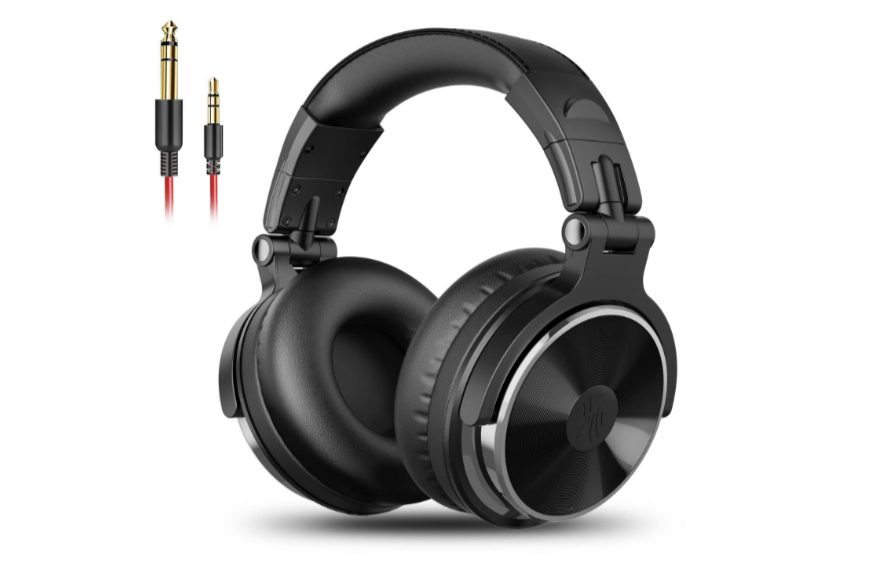

Here all the headphones ranges from | 1,000 - 76,000 | but all are high-end and do not have larger
differences with each other. Apart of 9,000 - 76,000 devices
#1 : beyerdynamic T5 high-end Tesla headphones | ₹ 76,014
About this earphone :
Why so high cost ? Purely hand-made from germany, OCC7N Copper and covered fabric (UNBREAKABLE), spatial
sound signature.
No more tanglation with those wired one rather use these awsome product with bluetooth
connection.
Trust us, even if a bomb explodes near you (here you are invinsible) you will not hear a single sound
from out. just enjoy your music.
These headphones wont create any problem if you just keep them over your ears for long hours.
Reviews :
Only 2 of our customers buyes it and had a response of 100% .Well, we won't suggest you to invest
your money in a headphone. But giving you due to its high ratings.
Ratings : 5.00/5.00
#2 : Sony WH-1000XM4 wireless | ₹ 24,990

About this earphone :
A super effective noise cancelling device with advanced features of voice assistant : google, alexa and
Siri
Speak to chat : Not at all needed to bring the mic near your mouth a simply durabble headphone,
just keep your hands on another work and keep speaking.
To turn down the music instantly, you just need to cover the right year cup with your palm and the music
will stop automatically.
Charge it for 10mins and get the enjoyment of 5 hours.
Reviews :
Well, only 3 customers here (just because of the price) but the quality was simply badass.
Ratings : 5.00/5.00
#3 : Bose Quietcomfort 45 | ₹ 32,900

About this earphone :
These headphones crafted with synthetic leather and impact resisted nylon and extremely durable
headphone.
A total 24 hour battery life and a 5 min charge will make it work 1 hour.
An extremely flexible noise cancelling device very comfortable and easy to connect with any device via
bluetooth.
Its really worth buying for your work purposes and all.
Reviews :
Well, only 6 customers here too for the same issue of price but the quality was lit
Ratings : 5.00/5.00
#4 : beyerdynamic DT 990 Pro wired | ₹ 14,846
About this earphone :
A proffesional version of many times awarded DT-990.
Very lightweight device compatable with every singe device.
Superb sound quality, you'll never complain about this, its a gurantee.
Charge it for 10mins and get the enjoyment of 3 hours.
Reviews :
Well, 10 customers here, the quality was awsome.(no complaints..)
Ratings : 5.00/5.00
#5 : boAt NITVANAA | ₹ 9,999

About this earphone :
20 hours of playtime in ANC(Active noise cancellation) mode.
Guranteed, 1 year warranty after the date of buying.
Crystal clear soung production via 40mm drivers.
Experience the smart mute option with your palm gestures.
Reviews :
Well, 44 customers here, and everyone liked it..
Ratings : 5.00/5.00
#6 : Sennheiser HD 599 wired | ₹ 9,990
About this earphone :
Outstanding, natural spatial high end performance
Ergonomic acoustic refinement design, channels the audio directly in your ears.
Rich quality sound, in your ears with comfortale ear cups for long lasting use.
A stylish design which will make the user look good as well as will make it noiseless from outside.
Reviews :
Ya, 105 customers all giving the best feedback no negative for this too..
Ratings : 5.00/5.00
#7 : UNIGEN Quietbeats with ANC | ₹ 3,199
About this earphone :
Active noise cancellation, which signifficantly reduces the outer noise whether you are in a train, bus
a very crowded area or anywhere.
45/90 degrees swivelling cups and adjustable head band deliver better durability.
An extremely comfortable headphoone, you can even sleep keeping them on your head all night, it won't
affect your ears.
A complete 5 to 20 hour playtime, via bluetooth don't need log time charging just about 1 hour for full
day enjoyment
Reviews :
1288 customers have appreciated this but 122 didn't cause of the big size
Ratings : 5.94/5.00
#8 : Audio technica ATH-M20X wired | ₹ 4,499

About this earphone :
This headphone is specially made for stdio tracking and mixing, it features high quality sound output
and very finely made by the engineers
40 mm driver and rare earth magnets copper clad aluminium wire voice coils
Excellent sound isolation in very rushy surroundings
The company also promises with the 50 years of japanese innovation Experience in the field.
Reviews :
96% of our customers liked the product, rest said it fine to use
Ratings : 4.91/5.00
#9 : Oneodio wired | ₹ 23,999

About this earphone :
HI-RES Certified sound : this alone point is enough to make you buy this one, its logo is an
exceptional
quality awarded to the headphones with some really excellent art. And this brand got that
Extremely soft padded ear cushions will provide you a superb comfort and will make you feel
relaxed.
A rich quality sound cmopatable with any device present out there.
This headphone can even plug in your TV, Mixer to get the full fledge Experience of a high quality
sound.
Reviews :
9% liked this product and 91% said it is absolutely stunning and worth to try once .
Ratings : 5.00/5.00
Note : we are ending here but note that here we havent given them any ranks as they were almost same. We
just
gave ranks to #1 #2 #3